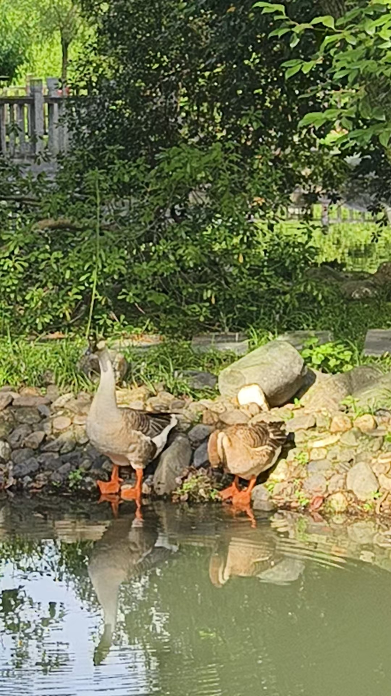

海昏侯
与滕王阁
与滕王阁
汉代王陵的黄金、八大山人的孤傲，
以及赣江入夜的灯火
以及赣江入夜的灯火
雨停了，南昌的湿热不弱于江南。但当海昏侯公园出现在眼前时——浓浓的汉代风，巨大，开阔，拙朴。从两千年前的黄金王陵，到八大山人的幽静园林，再到入夜后赣江对岸滕王阁亮起的灯火，一整天穿越了三个时空。
海昏侯国遗址公园
2015年中国十大考古发现之一。海昏侯刘贺，汉武帝之孙，当了27天皇帝被废。墓中出土黄金478件、铜钱200万枚（10吨），震惊考古界。一个被历史轻描淡写的废帝，地下却埋着一个王国的财富。

南昌汉代海昏侯国国家考古遗址公园入口

"西汉遗韵"主题雕塑
公园巨大，开阔，拙朴。汉文明的古风还在——马车的雕塑从广场上奔来，金色的马、金色的轮，两千年的时间在这里凝固成了造型。

汉代马车滚滚而来

弧形游客中心

博物馆门口的小猪雕塑，憨态可掬
实用信息
门票60元（65岁以上免票）
观光车15元
建议游览3~4小时
交通距南昌市区约45分钟车程
汉文明的古风还在
中午补给
误入南京鸭血店，来份鸭血粉丝汤。

鸭血粉丝汤

六朝门青花瓷碗

桂花凉豆腐
八大山人纪念馆
从海昏侯的汉代金光里出来，下午拐进了青云谱梅湖畔的八大山人纪念馆。明末清初画家朱耷——八大山人——隐居作画之地。
走岔了路，反而走进了更深处。园林幽静，古木参天，和上午的帝王气象完全是两个世界。朱耷是明朝宗室后裔，国破之后出家为僧，以画寄意。他的鱼鸟翻着白眼，他的山水空寂无人——一个亡国贵族的骄傲与孤独，都藏在这些笔墨里。

"淨明真境"——八大山人纪念馆门楼

庭院荷花池

睡莲特写

高山仰止

古树环绕老宅

八大山人生平展板

五桂合株景观石

八大山人铜像

水禽雁类

水岸边，两只鹅
赣江·滕王阁
傍晚回到酒店客房，一方面是疲了，另一方面是为了不错过秋水广场的喷泉表演——再者，这间客房正对着滕王阁，看它点灯亮起也是绝妙的感受。
傍晚的赣江，云涌水静

滕王阁日景——绿瓦红身，静立江畔
赣江的江面镜似的平，天空云涌卷起，自然的隽永大气。对面的滕王阁静静伫立，拉近镜头，它的英姿飒爽让人久久不愿移开视线。王勃写"落霞与孤鹜齐飞，秋水共长天一色"时，看到的大概就是这样的江面。

入夜后的赣江——大桥、喷泉、灯火
一方水土养一方人
行万里路才能体会人世间，自然，宇宙
行万里路才能体会人世间，自然，宇宙
春字号晚餐
看完喷泉表演已是八点多了，再次来到春字号，爆炒的烟火气，挺香。

春字号爆炒

豆芽炒鸡蛋

广式炒饭
入住的酒店

酒店外观

滕王阁纸雕灯
夏日避暑旅行 · 南昌